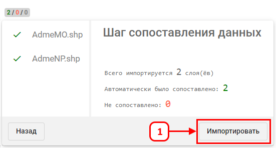

Слои автоматически сопоставляются.
После завершения Второго этапа загрузки, на экране «Карта» пользователю отображаются пространственные данные на картографической подоснове в условных обозначениях Приказа.
